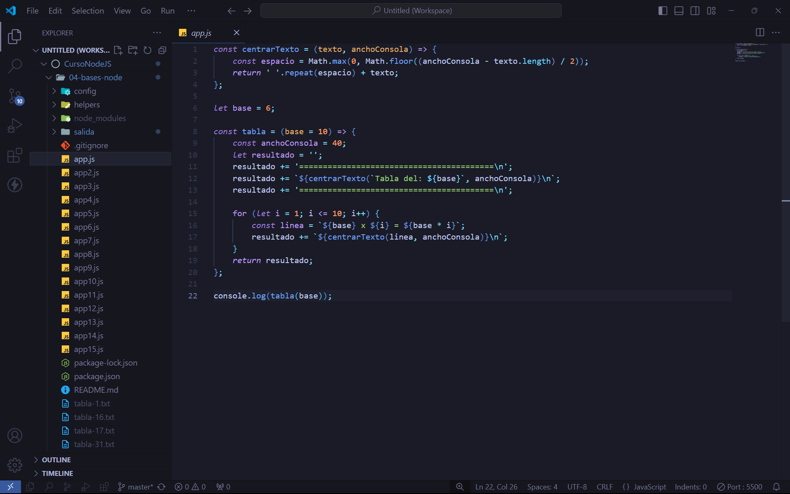
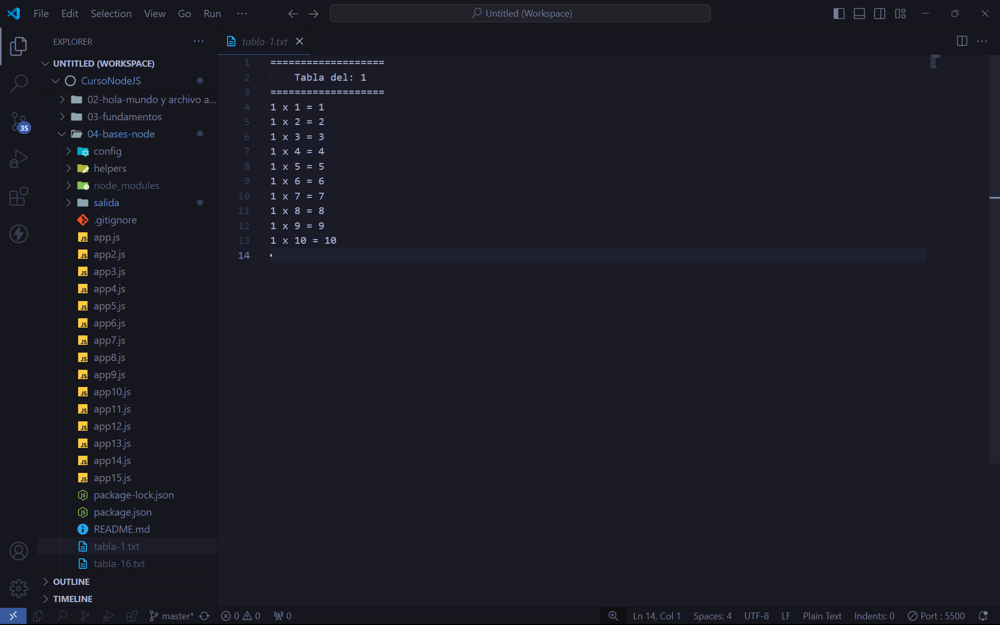
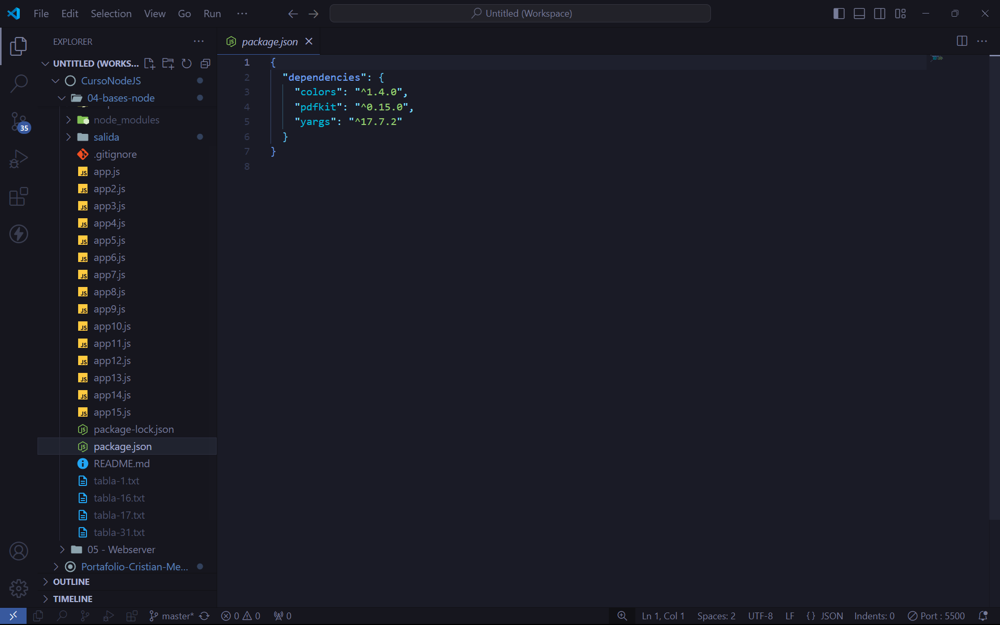
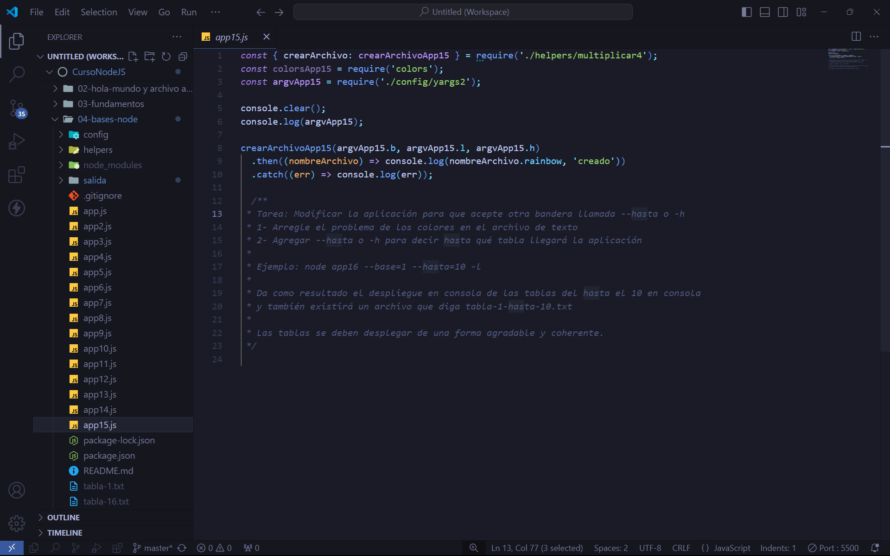
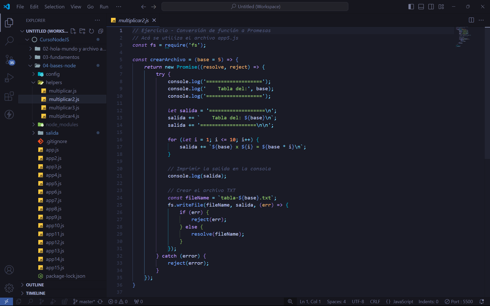
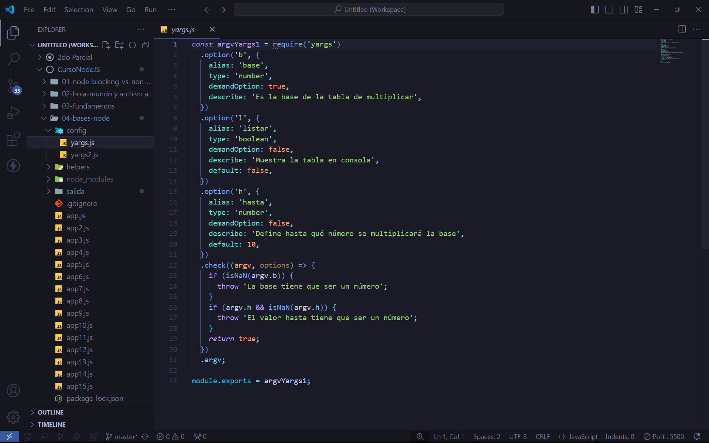

Aplicación YARGS
El siguente proyecto se realizo como parte del curso de desarollo web, el objetivo de este es mostrar como es la evolucion de una app, este proyecto genera tablas de multiplicar donde el usuario ingresa el valor de la base y el programa lo realiza a aprtir de destructuracion y va pasando los valores para poder tomados por otras funciones y asi realizar los calculos.

App.js
Crecion de app a app15

Genera archivos .txt
Al compilar esta app genera ya no en la consola ya que se realizo una modificacion para poder tener el resultado en un .txt

Instalacion de dependencias
Esta app fue una evolución ya que cada que se crea uno va adquiriendo mas complementos para poder darle mas dinamismo al codigo y mejoras en el aspecto.

Terminacion de todas las apps
Se crean las app para poder visualizar la evolución de las herramientas

Uso de archivos externos
Se usaron archovos externos para poder tomar los campos y proccesarlos en archos externos como lo son los multiplicar que estan alojados en helpers

Uso de yargas
En estas apps se usaron los archivos yargs alojados en un unos archivos.